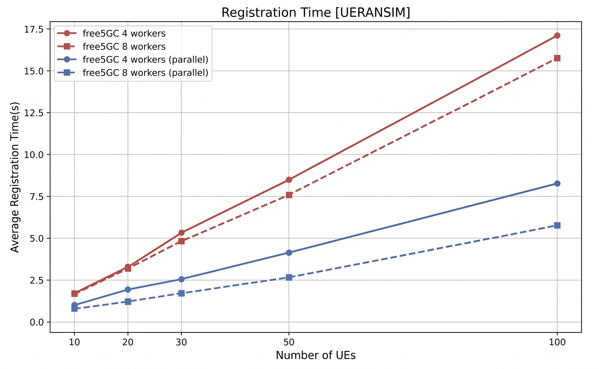
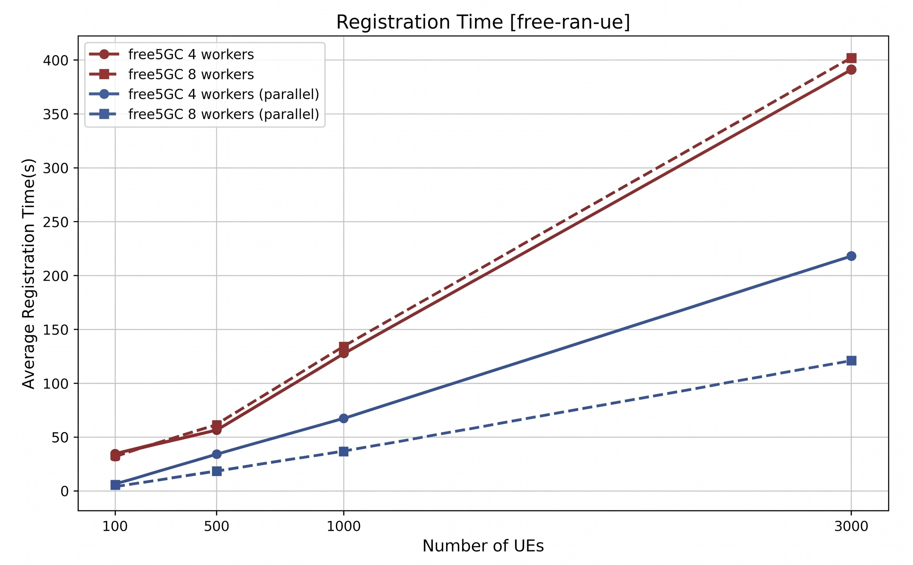

Parallelizing NGAP Processing in free5GC AMF: From Per-Connection to Per-UE Concurrency
Note
Author: Fang-Kai Ting, Guo-Cheng Wu, Yung-Hsuan Tsao, Pei-Chi Cheng
Written by: Che-Wei Lin
Date: 2026/04/29
Introduction
As 5G networks scale to support thousands of concurrent devices per cell, the Access and Mobility Management Function (AMF) becomes a critical bottleneck. In the free5GC project, a fundamental architectural limitation existed: all NGAP messages from a single gNB connection were processed serially by one goroutine, causing head-of-line blocking and single-core saturation.
In this blog post, we will walk through AMF PR #194, which introduces a worker pool architecture with hash-based task distribution to enable per-UE parallel NGAP processing — significantly improving AMF throughput while preserving per-UE message ordering guarantees.
Background: The NGAP/SCTP Connection Model
Before diving into the solution, let's quickly review how NGAP messages flow in a 5G network.
The NG Application Protocol (NGAP) is the control plane protocol between the gNB (base station) and the AMF. It runs over SCTP (Stream Control Transmission Protocol), which provides reliable, message-oriented transport. Typically, each gNB maintains a single SCTP association with the AMF, and all UE-related signaling for that gNB — registrations, handovers, PDU session setups — flows over this one connection.
Key NGAP Message Types
| Category | Examples | UE-Associated? |
|---|---|---|
| Non-UE messages | NGSetupRequest, RANConfigurationUpdate |
No |
| UE-specific (Initiating) | InitialUEMessage, UplinkNASTransport, HandoverRequired |
Yes |
| UE-specific (Response) | InitialContextSetupResponse, PDUSessionResourceSetupResponse |
Yes |
| UE-specific (Failure) | InitialContextSetupFailure, HandoverFailure |
Yes |
Each UE-associated message carries either a RAN-UE-NGAP-ID (assigned by gNB) or an AMF-UE-NGAP-ID (assigned by AMF), which uniquely identifies the UE context within the connection.
The Problem: Head-of-Line Blocking
In the original free5GC AMF, the handleConnection function in service.go followed a straightforward pattern:
// Original: sequential processing per connection
for {
n, _, _, err := conn.SCTPRead(buf)
// ...
handler.HandleMessage(conn, buf[:n]) // ← blocks until complete
}
This meant every NGAP message on a gNB connection was processed one at a time. Consider a realistic scenario where a single gNB serves hundreds of UEs:

The consequences were severe:
-
Head-of-Line (HoL) Blocking: A slow operation for UE1 (e.g., waiting for UDM/AUSF responses) stalls all other UEs on the same gNB — even though their operations are completely independent.
-
Single-Core Saturation: On a multi-core server, only one CPU core per gNB connection was utilized for NGAP processing, regardless of available hardware capacity.
-
Scalability Ceiling: As UE density per gNB increases, the serial bottleneck becomes the dominant limiting factor for AMF throughput.
There was even a TODO comment in the original codebase acknowledging this:
// TODO: concurrent on per-UE message
handler.HandleMessage(conn, buf[:n])
The Solution: Per-UE Parallel Processing
The re-design introduces a UEScheduler that distributes NGAP messages across a pool of worker goroutines using consistent hashing on the UE identifier:

This design achieves two critical properties simultaneously:
- Per-UE Sequentiality: All messages for the same UE are routed to the same worker, preserving strict ordering.
- Cross-UE Parallelism: Messages for different UEs are processed concurrently across multiple workers and CPU cores.
Component 1: The UE ID Extractor (ue_id_extractor.go)
The first challenge is determining which UE a message belongs to before full message processing. The project introduces ExtractUEID(), a lightweight NGAP decoder that extracts the UE identifier from the raw packet:
func ExtractUEID(msg []byte) (uint64, bool) {
pdu, err := ngap.Decoder(msg)
if err != nil {
return 0, false
}
switch pdu.Present {
case ngapType.NGAPPDUPresentInitiatingMessage:
return extractFromInitiatingMessage(pdu.InitiatingMessage)
case ngapType.NGAPPDUPresentSuccessfulOutcome:
return extractFromSuccessfulOutcome(pdu.SuccessfulOutcome)
case ngapType.NGAPPDUPresentUnsuccessfulOutcome:
return extractFromUnsuccessfulOutcome(pdu.UnsuccessfulOutcome)
}
return 0, false
}
The extractor covers 20+ NGAP procedure codes across all three PDU categories (InitiatingMessage, SuccessfulOutcome, UnsuccessfulOutcome). A key design decision is the ID preference strategy:
- For
InitialUEMessage: Uses RAN-UE-NGAP-ID (the AMF ID hasn't been assigned yet). - For subsequent messages (e.g.,
UplinkNASTransport): Prefers AMF-UE-NGAP-ID when available. - For
PathSwitchRequest: Uses SourceAMFUENGAPID to maintain worker affinity during handover. - For non-UE messages (e.g.,
NGSetupRequest): Returns0, false, routing them to a default worker.
Component 2: The Worker Pool Scheduler (scheduler.go)
The scheduler is the core orchestration layer. Each worker is a dedicated goroutine with its own buffered task channel:
type Task struct {
UEID uint64
Conn net.Conn
Message []byte
}
type Worker struct {
ID int
taskChan chan Task
stopChan chan struct{}
handler func(conn net.Conn, msg []byte)
wg *sync.WaitGroup
}
type UEScheduler struct {
workers []*Worker
numWorkers int
wg sync.WaitGroup
}
Hash-based routing ensures consistent UE-to-worker mapping with zero memory allocation:
func (s *UEScheduler) hashUEID(ueID uint64) int {
return int(ueID % uint64(s.numWorkers))
}
The initial implementation used FNV hashing, but this was simplified to modulo arithmetic afterward. FNV required
make([]byte)on every packet — an unnecessary allocation on the hot path. Simple modulo is sufficient for load distribution since UE IDs are already well-distributed integers.
Backpressure is implemented through the worker's Submit method using a select statement:
func (w *Worker) Submit(task Task) bool {
select {
case w.taskChan <- task:
return true
case <-w.stopChan:
logger.NgapLog.Warnf("Worker %d stopped, rejecting task for UE ID %d",
w.ID, task.UEID)
return false
}
}
When the worker's buffer is full, the sender blocks intentionally — this is a deliberate design choice for 5G control plane signaling, where dropping messages would cause retransmissions and potential signaling storms. If a shutdown signal arrives while blocked, the operation exits immediately.
Component 3: The Dispatch Layer (service.go)
The connection handler is refactored to decouple SCTP reading from message processing:
// New: dispatch through worker pool
func dispatchToWorkerPool(conn net.Conn, msg []byte, handler NGAPHandler) {
scheduler, err := ngap_internal.GetScheduler()
if err != nil {
// Fallback to sequential processing if scheduler unavailable
handler.HandleMessage(conn, msg)
return
}
ueID, found := ngap_internal.ExtractUEID(msg)
if !found {
ueID = 0 // Route non-UE messages to default worker
}
task := ngap_internal.Task{UEID: ueID, Conn: conn, Message: msg}
if !scheduler.DispatchTask(task) {
logger.NgapLog.Warnf("Drop packet for UE ID %d (Scheduler is shutting down)", ueID)
}
}
A graceful fallback to sequential processing is provided when the scheduler isn't initialized, ensuring backward compatibility.
Component 4: Configuration and Lifecycle (config.go, init.go)
Two new configuration parameters are added to amfcfg.yaml:
configuration:
ngapWorkerPoolSize: 0 # 0 = auto-detect (runtime.NumCPU())
ngapTaskBufferSize: 4096 # per-worker task buffer size
The scheduler is initialized during AMF startup and gracefully shut down during teardown:
// Startup
ngap.InitScheduler(workerPoolSize, taskBufferSize, ngap.Dispatch)
// Shutdown
ngap.ShutdownScheduler()
Safety Considerations: The Worker-Switch Problem
One subtlety deserves special attention. Because this re-design uses the global AMFContext with sync.Map for UE state storage, a UE's lifecycle may span multiple workers:
InitialUEMessage→ keyed by RAN-UE-NGAP-ID → routed to Worker AUplinkNASTransport→ keyed by AMF-UE-NGAP-ID → routed to Worker B
Why is this safe?
- The global context uses thread-safe
sync.Mapfor all UE context access. - The 5G request-response model inherently prevents a UE from sending messages with both RAN ID and AMF ID simultaneously — by the time the AMF-UE-NGAP-ID is assigned and used, the RAN-ID-only phase is complete.
- The worker switch happens only once per UE lifecycle (at the ID transition point).
Future improvement: A strictly lock-free, per-UE worker affinity model would require removing the global UePool and modifying the AMF-UE-ID allocation mechanism to bind specific IDs to specific workers.
Shutdown Safety
The re-design went through several iterations:
Iteration 1: Close the task channel directly
// Problem: "send on closed channel" panic
func (s *UEScheduler) Shutdown() {
close(w.taskChan) // Other goroutines may still be submitting!
}
Iteration 2: Use stopChan + select pattern
// Safe: stopChan signals shutdown without closing taskChan
func (w *Worker) run() {
for {
select {
case task := <-w.taskChan:
w.handler(task.Conn, task.Message)
case <-w.stopChan:
w.drainAndExit()
return
}
}
}
func (w *Worker) drainAndExit() {
for {
select {
case task := <-w.taskChan:
w.handler(task.Conn, task.Message)
default:
return // Channel empty, exit safely
}
}
}
The final design ensures:
- No panic from sending on a closed channel.
- All queued tasks are drained before exit.
sync.WaitGroupguarantees the AMF process doesn't exit until all workers have finished.
Testing Strategy
The re-design includes a comprehensive test suite covering both correctness and performance:
Unit Tests for UE ID Extraction (ue_id_extractor_test.go)
9 test scenarios that construct real NGAP PDUs, encode them, and verify extraction:
| Test Case | Message Type | Expected ID |
|---|---|---|
| InitialUEMessage | Initiating | RAN-UE-NGAP-ID |
| UplinkNASTransport | Initiating | AMF-UE-NGAP-ID (preferred over RAN ID) |
| HandoverRequired | Initiating | AMF-UE-NGAP-ID |
| InitialContextSetupResponse | Successful | AMF-UE-NGAP-ID |
| PDUSessionResourceSetupResponse | Successful | AMF-UE-NGAP-ID |
| UEContextReleaseRequest | Initiating | AMF-UE-NGAP-ID |
| NGSetupRequest | Initiating | Not found (non-UE message) |
| Invalid message | — | Not found |
Scheduler Tests (scheduler_test.go)
| Test | What It Validates |
|---|---|
| Hash Consistency | Same UE ID always maps to same worker (100 iterations) |
| Hash Distribution | 10,000 UEs distributed evenly (±25% tolerance) |
| Hash Range | Worker index always in [0, numWorkers) including edge cases |
| Concurrent Submission | 50 goroutines × 100 tasks, all processed without loss |
| Per-UE Sequentiality | 100 ordered messages for same UE processed in order |
| Multiple UEs Concurrent | 20 UEs × 50 messages, per-UE order preserved |
| Graceful Shutdown | All 50 queued tasks processed during shutdown |
Performance Testing
The re-design was validated with multiple UE simulation tools:
- UERANSIM: Up to ~100 concurrent UEs (./nr-ue -c free5gc-ue.yaml -n 100)
- free-ran-ue : Up to 3,000 concurrent UEs (./build/free-ran-ue ue -c config/ue.yaml -n 3000)
- Custom webconsole scripts: For multi-UE provisioning: register_multiple_ues.sh
-
With UERANSIM, the test scaled to 100 concurrent simulated UEs. The figure shows that the original sequential design (red) saw registration time increase steadily as UE count grew, reaching roughly 17 seconds at 100 UEs. After parallel NGAP processing was introduced (blue), registration time dropped to about 8 seconds with 4 workers and around 6 seconds with 8 workers, showing a clear improvement in scalability even at modest UE counts.

-
With free-ran-ue, we're able to scale the test to 3,000 concurrent simulated UEs. Under this heavier load, the original sequential path rose to roughly 400 seconds for 3,000 UEs, while the parallel design reduced that to about 220 seconds with 4 workers and around 120 seconds with 8 workers. This larger-scale result better highlights the benefit of this per-UE parallelism re-design.

Conclusion
This re-design demonstrates how a targeted architectural change — introducing a worker pool with hash-based routing — can dramatically improve the scalability of a 5G core network function without altering existing business logic. The key principles are:
- Decouple I/O from processing: The SCTP reader no longer blocks on message handling.
- Hash-based affinity: A simple
ueID % Nprovides per-UE ordering guarantees with zero allocation. - Backpressure over dropping: In control plane signaling, blocking is preferable to packet loss.
- Incremental architecture: By keeping the global
AMFContext/sync.Map, the change minimizes blast radius while achieving significant parallelism gains.
The code review process also highlighted the importance of shutdown safety in concurrent Go systems — evolving from a naive close(channel) approach to a robust stopChan + select + drain pattern.
If you're interested in the implementation details, check out the full PR at AMF PR #194.
Reference
- 3GPP TS 38.413: NG Application Protocol (NGAP)
- free5gc/amf PR #194: feat: parallelize NGAP processing in AMF
- References to implementation:
- Scheduler and worker pool: internal/ngap/scheduler.go
- UE ID extraction: internal/ngap/ue_id_extractor.go
- Connection dispatch: internal/ngap/service/service.go
- Configuration: pkg/factory/config.go
- Lifecycle management: pkg/service/init.go
- free-ran-ue: A next-generation open-source 5G RAN/UE project
Acknowledgement
Special thanks to Fang-Kai Ting, Guo-Cheng Wu, Yung-Hsuan Tsao, and Pei-Chi Cheng — the authors of this work. Their effort in designing and iterating on the parallel NGAP processing architecture made this contribution possible.
About
Hello! I'm Che-Wei Lin, and this blog post is a write-up of the work done by the authors mentioned above. I hope you found this blog post helpful, and please feel free to reach out for further discussion.
Connect with Me
- GitHub: Zach1113